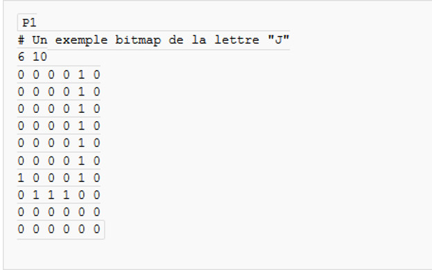
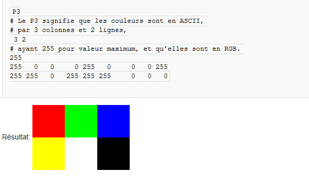

Nous avons travaillé assez rapidement sur le domaine des images , ça n'a malheureusement pas duré très longtemps principalement par manque de temps. Durant ces cours il nous a été possible de comprendre le fonction des couleurs et la composition d'une image ainsi que leurs différents formats.
Le premier format que nous avons exploité et travaillé était le format PBM pour "Portable Bitmap". Sous ce format le quadrillage de l'image est rempli par des pixels de couleur blanche ou même noir.
Voici donc à quoi ressemble le code afin de former une image PBM . Dans le code présenté on pourra observer un J sur l'image formée.
Il y a d'autres formats que nous avons pu étudier, par exemple, afin d'obtenir une image en couleur il existe le format PPM. Pour ce format il faudra donner la couleur de chaque pixel obtenue par synthèse additive RVB des couleurs sachant que chaques couleurs primaires sont codées en 8 bit
Voici un exemple de code :
Par manque de temps nous n'avons pas vraiment pu étudier en profondeur d'autres formats d'image. C'est là principalement ce que nous avons pu voir dans le domaine de l'image et de la couleur jusqu'à présent. Vous êtes maintenant invité à utiliser le menu à gauche afin de vous rendre sur un autre résumé de cours.
Mise en page par RUBIO Anthony, élêve de Terminale S1